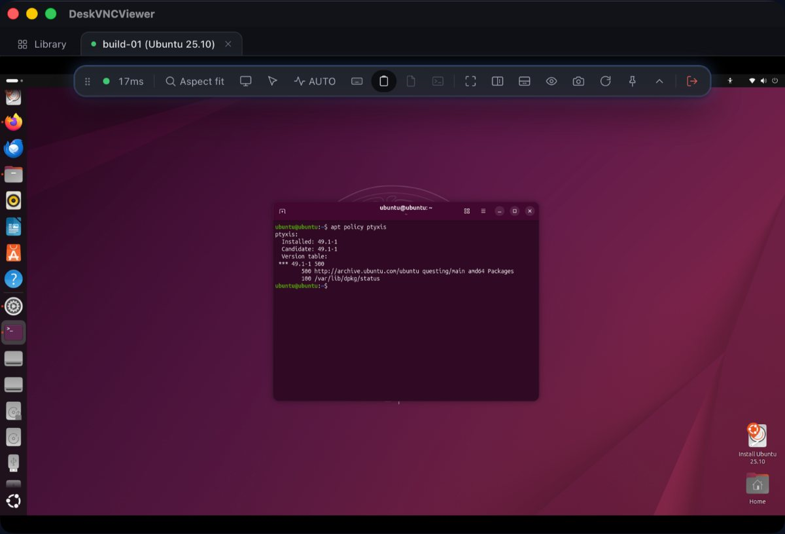
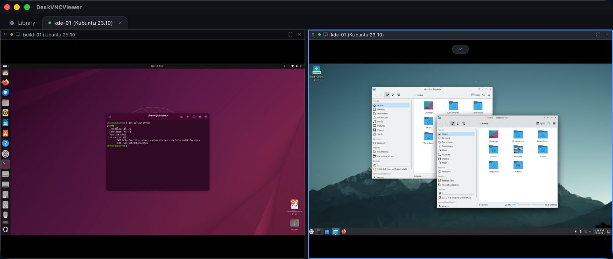

Each one starts from a real estate and a real job, not from a feature list. What the situation is, what DeskVNC does about it, and the calls that carry it out.
Case 01 Machines that refuse installed agents
Citrix sessions, VDI desktops, a jump host, and desktops a client owns.
The situation
A Citrix session, a VDI desktop, a jump host, a desktop a client owns. Each has no local administrator rights, no install path and no service that survives the session being rebuilt.
What DeskVNC does
The connection is the ordinary VNC, RDP or SSH one that machine already speaks. Nothing is installed on the target, so there is nothing to refuse: no agent, no service, no registry entry, and no change to the far side at all.
In one line
A protocol those machines already speak gets in anyway.
A jump host that speaks SSH is opened as a terminal limb, and a command on it comes back with the far side's own exit status. A Citrix or VDI desktop is opened over RDP or VNC, and read the same way: a framebuffer, a pointer and a keyboard.
The same three machines saved as hosts carry their own credentials and settings, so an agent can name a machine and the application resolves the address, the port, the protocol and the stored credential itself.
Case 02 An AI agent that needs to read a screen and act
Verify a change, fill a form, walk a wizard, read what is actually on the screen.
The situation
Work that is defined by what a machine is showing rather than by a command to run: a settings dialog, a licence prompt, a checkout, a desktop whose state has to be confirmed before the next step.
What DeskVNC does
Hands the agent the same connections you use by hand. It opens one of your saved machines, looks at the screen, clicks and types, over the protocol. One observe then act cycle measured at 19 ms, about 52 actions a second.
In one line
Observe, decide, act, and get one settled result back for every intent.
The four call loop, and then acting on what it saw. The generation you read from the screen goes back with the click, so a coordinate computed against a screen that has since resized is refused rather than landing somewhere unintended.

A live session, the remote desktop being viewed and driven from the project READMEMCP the loop
Typing is fenced too, because a keystroke aims at no coordinate and focus moves when a window opens. Text is refused with SCREEN_CHANGED if something window sized has repainted since the agent last looked, so it never goes into whatever appeared over the thing it was reading. One dvv_screen clears it, and there is no override.
The agent works in the background of your own work: input travels over the protocol to the remote, so the local mouse and keyboard are never involved and the viewer can be minimised while you carry on at your own machine.
Case 03 One window for a mixed Windows, macOS and Linux estate
A Windows desktop over RDP, a Linux box over VNC and a shell into a jump host, side by side.
The situation
A handful of machines or a few hundred. One client for Windows boxes, another for the Linux server in the cupboard, a terminal for everything else, and a text file of addresses nobody trusts.
What DeskVNC does
Three protocol cores in one library and one host library over them. Sessions open as tabs, and any tab splits into panes that can each hold a different machine and a different protocol. Each tile shows what that machine looked like when you last left it.
In one line
A Windows desktop over RDP next to a Linux box over VNC next to a shell is an ordinary arrangement here.
Addresses read the way you already think of them, and if you do not know one, Scan network finds what is listening nearby.

Two desktops side by side in one window, each its own machine from the project READMEViewer address formats
For the same action across a set, open them as a group. Every member starts before any finishes, and one member failing is reported for that member alone.
Each machine is its own limb with its own lease, so ten machines are ten independent loops from one agent. Discovery results reach an agent too, so a machine nobody saved can still be opened.
MCP what discovery found
dvv_hosts {"discovered": true}
More on groups in guide 7, and on discovery and Wake on LAN in guide 9.
Case 04 Remote support where a person takes the wheel back
An agent is mid task, and someone needs the mouse for a moment.
The situation
Support work, and automation on the same machines. The agent has the control lease, the person watching the pane has seen something the agent has not, or the two of them want the keyboard at the same time.
What DeskVNC does
Control is leased, and a person outranks an agent by default. Clicking into the pane fences the agent out of that session and hands the wheel over with no application code involved. Handing it back is the same click. Held keys and buttons are released on any lease change, so a half finished drag cannot strand the desktop.
In one line
An agent driven pane is an ordinary session, and the take the wheel control is on it.
For the person on the other end of the connection, download DeskVNC Support from the same release page and send it to them. They open it and press Get a code, or Create invitation when no code service is configured, and approve your connection. You open Boundary support in DeskVNC, paste the invitation, and connect. It tries a direct encrypted path first and uses its relay fallback when the networks do not allow a direct one. The recipient can revoke control or end the session at any moment, and no account is required for an attended session.
On the agent side, losing the wheel is an ordinary event with a name. dvv_control with yield_status says whether a person took over, and that is the one case where the right move is to stop rather than retry.
MCP the handover
dvv_control {"limbId": "...", "action": "acquire", "reason": "checking the print queue"}
dvv_control {"limbId": "...", "action": "yield_status"}
# -> lease.human_took_over: true means a person is driving: stop and say so
dvv_control {"limbId": "...", "action": "acquire"} # take it back when they hand over
From a shell, dvv stop revokes the wheel outright: keys released, no grace period.
Terminal dvv stop
dvv stop lmb_frontdesk
dvv control yield_status lmb_frontdesk --json
Downloads for the viewer and for DeskVNC Support are on the latest release: the support app ships for macOS, signed and notarised, for Windows, signed, and for Linux as an x86_64 binary in a tarball.
Installing on Windows, macOS and Linux, registering the MCP server with Claude Code and OpenCode, the loop, files, clipboard, terminals, groups, the keychain, discovery and Wake on LAN.
19 ms per observe then act cycle, 4 ms to open and attach, 25 ms for a quarter scale screen, 447 characters a second, measured on a real 1920x1080 Windows desktop over a LAN.